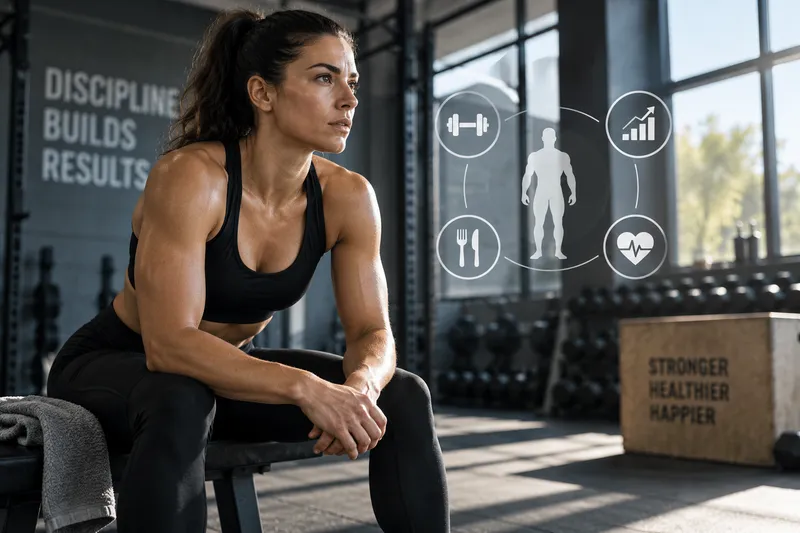

כמה חלבון צריך מתאמן ביום?
חלבון הוא אחד מאבות המזון המרכזיים בתזונת ספורט, משום שהוא מספק חומצות אמינו הדרושות לבנייה, לתחזוקה ולתיקון של רקמת השריר. לפי דף המידע המקצועי של Office of Dietary Supplements במכוני הבריאות הלאומיים של ארצות הברית (NIH), ספורטאים זקוקים בדרך כלל לכ-1.2-2.0 גרם חלבון לכל קילוגרם משקל גוף ביום. הטווח תלוי בסוג האימון, עצימותו, היקף האימונים והצריכה הקלורית הכוללת.
לדוגמה, מתאמן במשקל 80 קילוגרם עשוי להימצא בטווח של כ-96-160 גרם חלבון ביום. אין פירוש הדבר שכל אדם חייב להגיע לקצה העליון של הטווח. המטרה היא להתאים את הכמות לעומס האימונים, ליעד ולתפריט הכולל.
האם חייבים אבקת חלבון?
לא. אפשר להגיע לצריכת חלבון מספקת גם ממזון רגיל. אבקת חלבון היא בעיקר כלי נוח: היא מאפשרת לקבל מנה מדודה של חלבון במהירות, במיוחד כאשר קשה להגיע ליעד היומי באמצעות ארוחות בלבד. לכן, בבחירת אבקות חלבון כדאי להסתכל קודם כל על כמות החלבון למנה, כמות הקלוריות, הסוכרים והשומנים, ורשימת הרכיבים.
כמה חלבון כדאי לאכול אחרי אימון?
NIH מציין כי צריכת חלבון איכותי בסמוך לאימון תומכת בתהליך ההתאוששות ובסינתזת חלבון השריר. בפועל, לא צריך להילחץ מ'חלון אנבולי' של דקות ספורות. עדיף להתמקד בצריכת חלבון מספקת לאורך היום ובפיזור נוח בין הארוחות.
למי שנמצא בחיטוב, אבקות חלבון דלות קלוריות יכולות להיות שימושיות במיוחד כאשר רוצים להגדיל חלבון בלי להוסיף הרבה קלוריות. לעומת זאת, בתקופת עלייה במשקל אפשר לשלב חלבון יחד עם פחמימות ומקורות אנרגיה נוספים.
מה עדיף: שייק, חטיף או משקה חלבון?
אין מוצר אחד שמתאים לכולם. שייק מאבקה מאפשר שליטה בכמות ובנוזל; משקאות חלבון מוכנים לשתייה נוחים לדרך; וחטיפי חלבון יכולים להתאים כאשר רוצים גם משהו ללעוס. בכל המקרים חשוב לקרוא את הערכים התזונתיים ולא להסתמך רק על הכיתוב 'חלבון' בחזית האריזה.
השורה התחתונה
לרוב המתאמנים, החלק החשוב ביותר הוא להגיע לצריכת חלבון יומית מספקת ועקבית. אבקת חלבון אינה תחליף לתפריט מאוזן, אבל היא יכולה להיות דרך יעילה ונוחה להשלים את הכמות היומית. אם קיימת מחלת כליה, מצב רפואי, הריון או טיפול תרופתי קבוע, מומלץ להתייעץ עם איש מקצוע לפני שינוי משמעותי בתזונה או שימוש בתוספים.
איך לפזר את החלבון לאורך היום?
במקום לרכז את רוב החלבון בארוחה אחת, נוח יותר לרוב המתאמנים לחלק אותו בין כמה ארוחות במהלך היום. כך קל יותר להגיע ליעד היומי בלי ארוחות גדולות במיוחד, וכל ארוחה יכולה לכלול מקור חלבון משמעותי. בפועל אפשר לבנות את היום סביב ארוחות עיקריות ולהשתמש בשייק, משקה או חטיף חלבון רק כאשר הם פותרים בעיית נוחות אמיתית.
איך לבחור מוצר חלבון לפי המטרה?
בחיטוב כדאי להשוות את כמות החלבון ביחס לקלוריות למנה, בעוד שבעלייה במסה ייתכן שדווקא תוספת של פחמימות וקלוריות תהיה שימושית. חשוב להשוות מוצרים לפי מנה אמיתית ולא רק לפי 100 גרם, ולבדוק גם סוכרים, שומן, אלרגנים וגודל מנה. כך הבחירה נעשית לפי התפריט והמטרה ולא לפי הכיתוב הבולט בחזית האריזה.
מקורות מקצועיים
הערת פרסום: המידע במאמר כללי ואינו מהווה ייעוץ רפואי או תזונתי אישי.